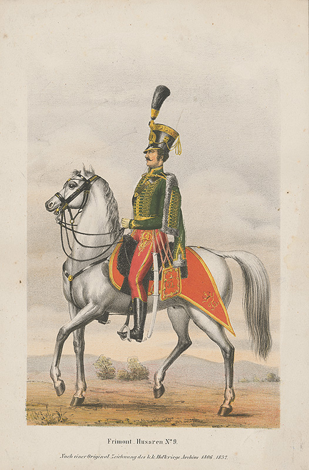

Petőfi Sándor: A huszár

A huszár
Szegény legény vagyok,
Nincs semmi vagyonom;
Szívem sem az enyém,
Rég birja galambom.
Életemet pedig
Hazám, te szent hazám,
Kész áldozat gyanánt
Tenéked áldozám.
Ami még megmaradt:
Te szűz becsületem,
Magammal viszlek el,
Te sírba szállsz velem.
Szalonta, 1849, május 27-28.